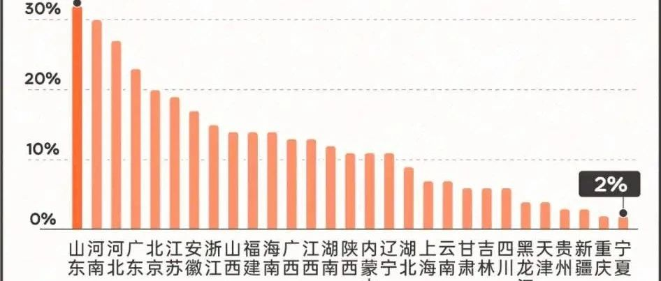

重男轻女仍严重,山东32%民众更希望生男孩
腾讯新闻近日发布《2024年了，谁还在为了生男孩拼命？》，指出相较十年前，中国“重男轻女”思想有明显下降，但全国仍有14%民众更希望生男孩，山东为32%、河南为30%、广东为23%。
腾讯新闻旗下自媒体《谷雨数据》，根据各地民众在百度搜索对“备孕”关键词的搜索量，和对“生男孩”关键词的搜索量，进行占比计算，推测出各地民众“更希望生男孩”的占比。
9月27日，腾讯新闻发布《2024年了，谁还在为了生男孩拼命？》报告推文。指出与十年前的2014年相比，“更希望生男孩”从54%减少至2024年的14%，性别偏好、“重男轻女”大幅下降。
而分地区来看，尽管所有省级行政区“重男轻女思想”占比均有所下降(注:不含港澳台)，但有的省份下降快，而有的省份下降慢。其中被认为“重男轻女”较严重的福建、江西，均从2014年的70%+下降至2024年的10%+，福建从2014年的第4名降至2024年的第10名，江西从2014年的第8名降至2024年的第13名。而经济较发达的省份，广东、北京、江苏和浙江，“重男轻女”思想占比排名相对上涨（注:数值下降，但排名上升）：广东从第11名升至第4名，北京从第19名升至第5名，江苏从第20名升至第6名，浙江从第26名升至第8名。
另外，部分被认为“重男轻女”思想较严重的省份，目前也仍有较严重的“重男轻女”思想占比，排名也仍然靠前。山东、河南、河北、广东4省占全国“重男轻女”思想前4名，分别有32%、30%、27%、23%。
“重男轻女”思想最不严重的4个省份分别是，西藏、青海、宁夏、重庆。而2014年时分别是西藏、重庆、四川、黑龙江。